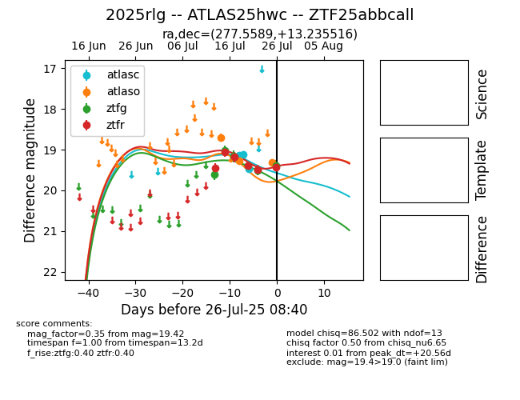

Target 2025rlg at 2025-07-26 08:40, see:
FINK: fink-portal.org/2025rlg
Lasair: lasair-ztf.lsst.ac.uk/objects/2025rlg
ALeRCE: alerce.online/object/2025rlg
TNS: wis-tns.org/object/2025rlg
YSE: ziggy.ucolick.org/yse/transient_detail/2025rlg
alt names
ZTF25abbcall (ztf,fink)
2025rlg (tns,yse)
ATLAS25hwc (atlas)
coordinates:
equatorial (ra, dec) = (277.5589,+13.23552)
galactic (l, b) = (42.4642,+10.62810)
photometry
last atlasc=19.48, atlaso=19.31, ztfg=19.38, ztfr=19.42
3 atlasc, 3 atlaso, 6 ztfg, 6 ztfr detections
